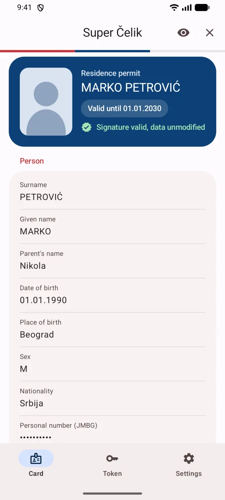
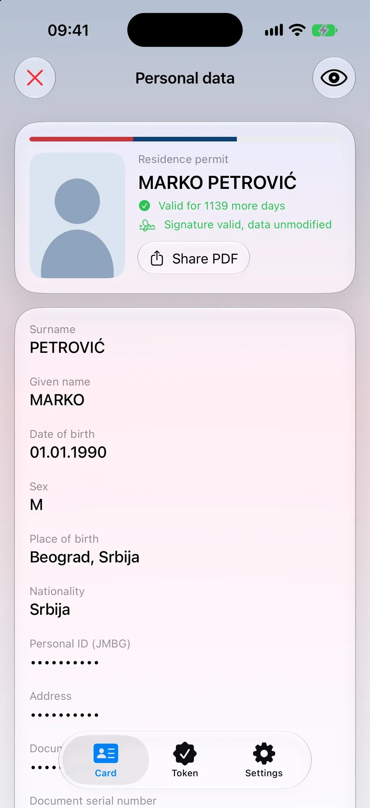

Личные данные и фото
Имя, личный номер, адрес, документ и фото. Чувствительные поля скрыты, пока вы их не покажете.
ВНЖ, ПМЖ, ID-карта: считывайте, подписывайте, управляйте PIN-кодом. Безопасно и приватно с Super Čelik



Super Čelik заменяет Čelik и TrustEdge ID: читает карту, проверяет подпись МУП, печатает, подписывает файлы и помогает войти на eid.gov.rs.
Имя, личный номер, адрес, документ и фото. Чувствительные поля скрыты, пока вы их не покажете.
Подпись карты проверяется по цепочке сертификатов МУП. Видно, что данные не подделаны.
На iPhone, iPad и Android входите на eUprava прямо в приложении. На компьютере – через браузер: на Mac это Safari, Chrome, Edge и Firefox, в Windows – Chrome, Edge и Firefox, в Linux – Firefox, Chrome и Edge.
Печатная форма в стиле официальной: сохраните в PDF или отправьте на принтер.
Смена PIN, разблокировка по PUK, электронная подпись документов (.p7s) ключом карты.
Нет аккаунта, аналитики и серверов. Данные карты не покидают устройство и стираются автоматически.
Одинаковые возможности на macOS, Windows, Linux, Android, iPhone и iPad.
Личные данные, фото, срок действия и проверка подписи МУП. Личный номер и адрес скрыты, пока вы их не покажете.
Сертификаты карты с проверкой цепочки до МУП, смена PIN, разблокировка по PUK и подпись файлов.
Личные данные, фото, срок действия и проверка подписи МУП. Личный номер и адрес скрыты, пока вы их не покажете.
Сертификаты карты с проверкой цепочки до МУП, смена PIN, разблокировка по PUK и подпись файлов.
Личные данные, фото, срок действия и проверка подписи МУП. Личный номер и адрес скрыты, пока вы их не покажете.
Сертификаты карты с проверкой цепочки до МУП, смена PIN, разблокировка по PUK и подпись файлов.
Подключите считыватель смарт-карт по USB-C: приложение само увидит его и карту, данные и проверка подписи появятся на экране.
Приложение подстраивается под тему системы. Данные скрываются и стираются сами.
Чтение через USB-ридер смарт-карт (USB-C или переходник OTG): данные, фото и проверка подписи.
Смена PIN, разблокировка по PUK и подпись файла ключом карты.
Никуда. Нет аккаунтов, аналитики и серверов. Карта читается локально, данные хранятся только в памяти и стираются при закрытии или по таймеру. Код открыт, его можно проверить. Приложение независимое и не связано с МУП РС и NetSeT/Veridos.
Да, нужен USB-ридер смарт-карт (PC/SC, CCID). На iPhone, iPad и Android нужен ридер с разъёмом USB-C или переходник. NFC не используется: чип сербской карты контактный. Что выбрать и где купить: страница Reader.
Электронная ID-карта, карта иностранца и вид на жительство нового образца (RP2024). Старая карта Apollo пока не поддерживается.
На Mac запустите приложение один раз, вставьте карту, затем полностью закройте браузер (⌘Q) и откройте сайт снова. В Windows драйвер ставится вместе с приложением (официальный драйвер МУП / NetSeT не нужен), Chrome, Edge и Firefox увидят сертификат карты. В Linux приложение предложит подключить модуль карты к Firefox, Chrome и Edge (Firefox и Chromium из Snap, которые в Ubuntu стоят по умолчанию, автоматически не подключаются: поставьте Firefox обычным пакетом, а Chrome или Edge с их сайта). Если Mac всё равно не видит сертификат, выньте и снова вставьте карту (при необходимости и ридер), подождите пару секунд и ещё раз закройте браузер. На вкладке Token в приложении видно, подключила ли система драйвер карты.
Неверный PIN тратит попытку: после нескольких ошибок карта блокируется. Вводите PIN только в системном окне или в самом приложении.
Нажмите кнопку Windows и запустите скачанный установщик. Если SmartScreen пишет «Windows защитила ваш компьютер», нажмите «Подробнее» → «Выполнить в любом случае»: установщик пока не подписан сертификатом издателя. Нужны права администратора, потому что драйвер карты ставится в системную папку. Для Windows XP, Vista, 7 и 32-битных систем есть отдельная кнопка Windows XP (бета).
Откройте эту страницу на телефоне и нажмите кнопку Android: скачается APK. Android предложит разрешить установку из неизвестных источников для вашего браузера: разрешите и подтвердите. Затем подключите ридер по USB-C или через переходник OTG, чтение начнётся само.
Нажмите кнопку Linux: скачается пакет .deb для вашего процессора (x64 или arm64). Установите его: sudo apt install ./SuperCelik-….deb; нужные службы (pcscd) подтянутся сами. Для других дистрибутивов на странице релиза есть .tar.gz, для него должна работать служба pcscd. Версия для Linux пока в бете: напишите, что получилось, в разделе Issues на GitHub.